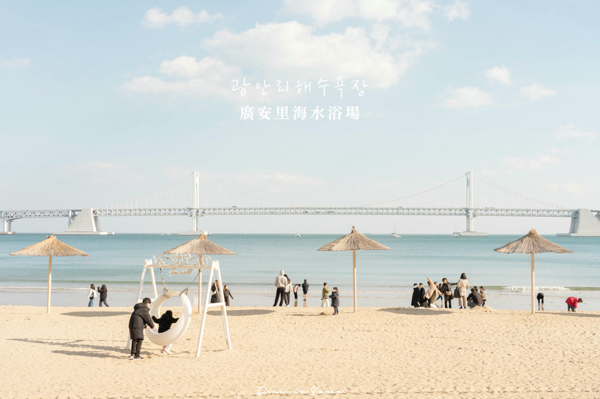
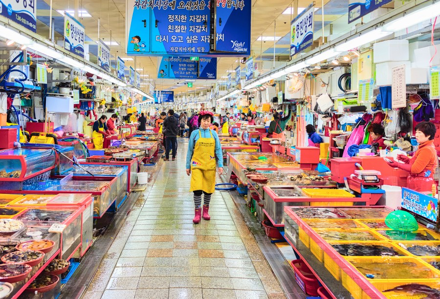

Scroll
釜山是韓國第二大城市，坐落於朝鮮半島南端，三面環海，海岸線綿延超過200公里。 從繁華的BIFF廣場到靜謐的太宗台，從新潮的膠囊列車到傳統的札嘎其市場—— 這座港都每一處轉角，都有不同的風景等待被發現。
從彩虹階梯的甘川文化村到海岸線上的天空膠囊，
釜山的每一處風景，都在訴說港都專屬的故事。

Featured曾是避難住宅區的小丘，如今蛻變成韓國最繽紛的藝術村。 穿梭在彩虹階梯與童話壁畫之間，每一步都有驚喜等著被探索。

海灘釜山最具代表性的海岸，夏日人潮洶湧，秋冬則回歸靜謐。 與海雲台市場僅一路之隔，遊客可同時感受沙灘與道地美食的雙重魅力。
 夜景
夜景
釜山賞夜景的首選之地——廣安大橋每晚點亮，光影倒映海面， 沙灘旁的咖啡街飄來陣陣香氣，是年輕人聚集的潮流聖地。
 特色體驗
特色體驗
運行於青沙浦與尾浦之間的海岸膠囊車廂，猶如糖果掉落在湛藍海岸上。 秋季搭乘，海風微涼，天空湛藍，是釜山最浪漫的體驗之一。
 傳統市場
傳統市場
韓國最大規模的海鮮市場，攤商超過300家， 活跳跳的帝王蟹、章魚、貝類應有盡有。現買現吃的體驗，是釜山行的必訪行程。
從海港現撈的活蟹到市場裡的街頭美味——
釜山的滋味，在舌尖上寫下回憶。